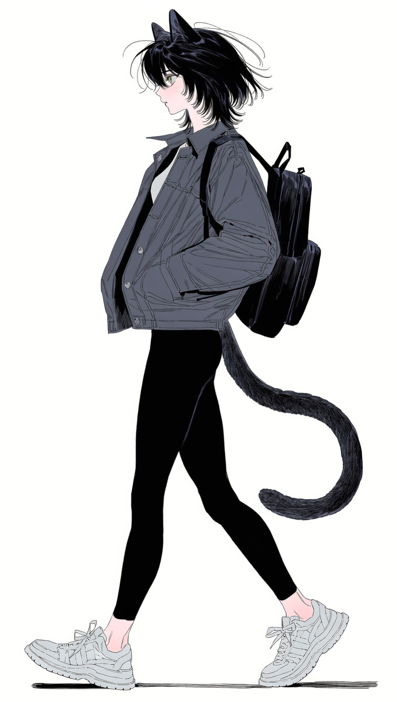
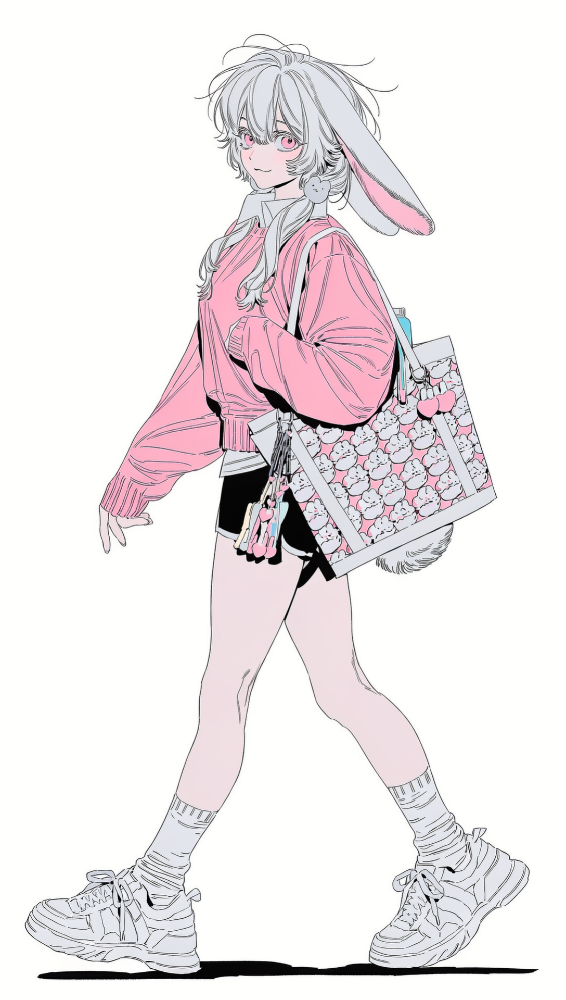

CITY NETWORK · PERSONAL VISUAL ARCHIVE
PHOTO
ARCHIVE
시민별 시각 기록 보관함. 현재는 대표 전신 기록만 등록되어 있으며, 이후 일상·직업·개인 기록 사진을 각 폴더에 추가할 수 있다.

PHOTO ARCHIVEMIU
01 FILE →

PHOTO ARCHIVEMARY
01 FILE →

PHOTO ARCHIVELULU
01 FILE →

PHOTO ARCHIVERIO
01 FILE →

PHOTO ARCHIVEPOPO
01 FILE →
PHOTO ARCHIVENERO
01 FILE →

FIELD IMAGE RECORDSIAN CARTER
01 FILE →